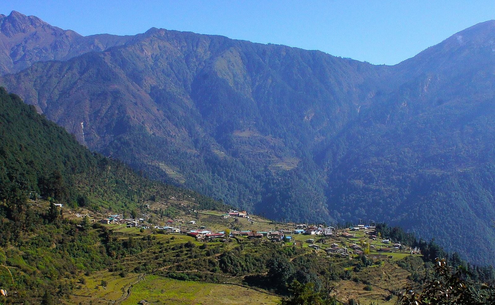
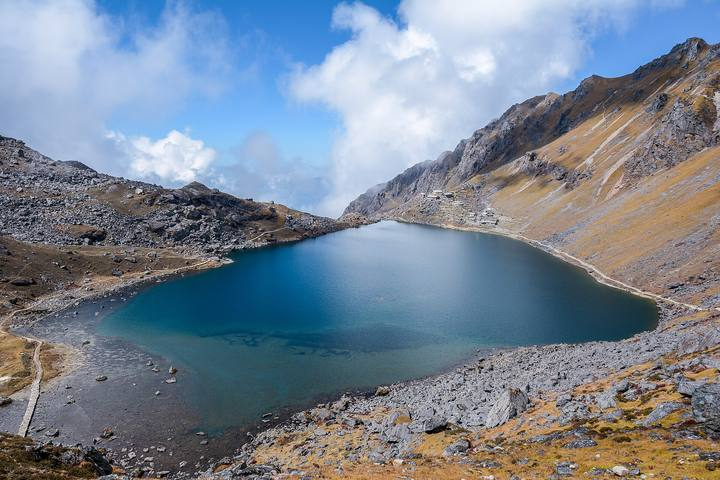

Helambu Circuit
A six-day loop from Sundarijal along a forested ridge to Tharepati at 3,690 m, then down through the Hyolmo villages of Melamchi Gaun, Tarkeghyang and Sermathang.


- Duration
- 5–8 days
- Distance
- 70 kmapproximate
- Highest point
- 3,690 mTharepati · 12,106 ft
- Highest night
- 3,690 mTharepati
- Difficulty
- ModerateTeahouse lodges
- Best months
- Mar–Apr, Oct–Nov
Is this trek right for me?
The walking
6 days in all. Most walking days are 4 to 6 hours on foot, and the longest is about 7 hours. Five to seven hour days with real climbs, usually below 4,500 m.
The height
The highest night is at 3,690 m, and the plan gains height quickly on the way. Many people feel it. The day-by-day plan marks where: take that day slowly, or split it.
Where you sleep
In lodges every night: a simple twin room, a shared bathroom and hot meals in a warm dining room.
The help you need
The rules require a licensed guide on this route. A porter to carry your bag is your choice.
What it costs
A guided trip with a trekking company usually costs USD 350 to 650 a person, going by the prices 9 companies published for 2026.
Overview
Helambu is the hill country north-east of Kathmandu, between the Shivapuri ridge and the peaks of Jugal and Langtang. Its upper villages are the home of the Hyolmo, a Buddhist people with their own language, monasteries and apple orchards. The circuit is the classic short trek from the capital: you start walking an hour's drive from Thamel and never go far above the tree line.
The first three days follow one long ridge north, through Tamang villages and then unbroken oak, rhododendron and fir forest, to the lodges at Tharepati. From there the route drops east into the Melamchi valley and comes back south through Melamchi Gaun, Tarkeghyang and Sermathang. The days are longer and steeper than the modest altitude suggests, with a lot of descent on stone steps.
Helambu has changed more than most trekking areas. Sindhupalchok was among the districts worst hit by the 2015 earthquake, and most houses and monasteries here are rebuilds. Dirt roads now touch the route along the lower ridge and at Tarkeghyang and Sermathang, and debris floods in June 2021 tore out much of the road and bazaar along the Melamchi river. What remains is a quiet trail with good lodges, where the last day or two can be walked or driven as you prefer.
Highlights
- Starting a Himalayan trek from the edge of Kathmandu
- Three days of ridge-top forest, with rhododendron in bloom in spring
- Dawn at Tharepati, looking east to Dorje Lakpa and the Jugal peaks
- Hyolmo villages and monasteries at Melamchi Gaun, Tarkeghyang and Sermathang
- Helambu apples in autumn
Moderate: Low by Himalayan standards, but the ridge days are long and steep, and Tharepati is reached with a jump of about 1,200 m in sleeping height.
Altitude profile
Height at the end of each day, with the high points in between. Dots are the places you sleep.
1 night gains height faster than the usual guideline. That is common on standard itineraries, but it is where problems start. Check how you feel before each of these climbs.
- Day 3, Tharepati: Sleeping altitude rises 690 m, well over the 500 m guideline even with a rest night next to it.
Try adding a night in the acclimatization checker · Check your symptoms
Day by day
About 28–35 h of walking in total. Times are for a steady pace with short breaks; add more for photos and tea.
-
Day1
Drive to Sundarijal, walk to Chisapani
Sundarijal to Mulkharka to Borlang Bhanjyang to Chisapani
Under an hour by road from Thamel, then stone steps beside the water pipeline, the Tamang village of Mulkharka and a long forest climb inside Shivapuri Nagarjun National Park to the Borlang Bhanjyang saddle. Chisapani is a short descent beyond it.
10 places to stay in Chisapani, such as Hotel Annapurna Mountain View, Dorje Lakpa Hotel and Hotel B.B.C.. See them
- Sleep at
- 2,165 m
- Change
- +705 m
- High point
- 2,420 m
- Walking
- 4–5 h
-
Day2
Chisapani to Kutumsang
Chisapani to Pati Bhanjyang to Chipling to Golphu Bhanjyang to Kutumsang
A day of ups and downs along the ridge: down 400 m to Pati Bhanjyang, up stone steps to Chipling, over a forested shoulder and down to Golphu Bhanjyang, then a last climb to Kutumsang, where permits are checked. You climb about 1,000 m in all to finish 300 m higher than you started.
7 places to stay in Kutumsang, such as Aana yangri, Yak Hotel & Guest House and Mountain View Lodge & Resort. See them
- Sleep at
- 2,470 m
- Change
- +305 m
- Walking
- 6–7 h
-
Day3
Kutumsang to Tharepati
Kutumsang to Magin Goth to Tharepati
A steady forest climb of about 1,200 m with no villages, only the lodges at Magin Goth after three hours or so. Rhododendron gives way to juniper and open pasture near the top. It is a big jump in sleeping height: if you are prone to headaches, stop at Magin Goth and finish in the morning.
2 places to stay in Tharepati, such as Hotel Thasi Delek and Sumchho Top Lodge (3642m). See them
Watch this gainSleeping altitude rises 690 m, well over the 500 m guideline even with a rest night next to it.
- Sleep at
- 3,690 m
- Change
- +1,220 m
- Walking
- 5–6 h
- Distance
- 11 km
-
Day4
Tharepati to Tarkeghyang
Tharepati to Melamchi Gaun to Tarkeghyang
Leave the Gosaikunda trail and drop more than 1,100 m through forest to Melamchi Gaun for lunch. Then descend again to the bridge over the Melamchi Khola at about 1,900 m and climb 700 m up the far side to Tarkeghyang. Sound knees matter more than lungs today.
3 places to stay in Tarkeghyang, such as Hotel Yangri Peak, Hotel Tarkeghyang and Buddha Lodge. See them
- Sleep at
- 2,600 m
- Change
- −1,090 m
- Walking
- 6–7 h
-
Day5
Tarkeghyang to Sermathang
The easiest day: a near-level contour through forest and past the small village of Gangyul, sharing parts of the way with a jeep track. You are in by lunch, with the afternoon free for Sermathang's monasteries and the view north to the Jugal peaks.
- Sleep at
- 2,590 m
- Change
- −10 m
- Walking
- 3–4 h
- Distance
- 10 km
-
Day6
Sermathang to Melamchi Pul Bazaar, drive to Kathmandu
Sermathang to Melamchi Pul Bazaar
A descent of 1,700 m down the ridge through Kakani and Dubhachaur into rice terraces and real heat, much of it on or beside a jeep road. Buses then take three to four hours to Kathmandu. Many groups now skip the walk and ride down from Sermathang.
1 place to stay in Melamchi Pul Bazaar, such as Melamchi hotel. See them
- Walk ends at
- 870 m
- Change
- −1,720 m
- Walking
- 4–6 h
Ways to change it
Shorter loop through Timbu
From Tarkeghyang, drop straight to the road at Timbu in two to three hours and take a bus or jeep to Kathmandu. This cuts the trek to five days and skips Sermathang.
Different overnight stops
The stage ends are flexible. Chipling or Golphu Bhanjyang can stand in for Chisapani and Kutumsang, Magin Goth for Tharepati, and Melamchi Gaun for Tarkeghyang, which is how most six and seven day versions differ from this one.
End at Sermathang
Arrange a jeep from Sermathang on the morning of day six and you are in Kathmandu by afternoon, without the long, hot descent to Melamchi Pul Bazaar.
Add Ama Yangri
Spend a second night at Tarkeghyang and climb the 3,771 m summit above the village. It is a steep 1,200 m up and down, five to seven hours, and the best viewpoint in Helambu.
Continue to Gosaikunda
From Tharepati a rough trail runs north-west through Ghopte and Phedi and over the 4,610 m Laurebina La to the Gosaikunda lakes, two days away, with an exit to Dhunche. It is a much more serious undertaking than the circuit, especially in snow.
Route map
The map loads when you scroll here. It needs a connection the first time; tiles you have viewed stay available offline.
The solid line follows footpaths mapped in OpenStreetMap. It is a guide to where the route goes, not a navigation track: trails are rerouted after landslides, so follow the signs and people on the ground. Marker positions come from OpenStreetMap where we could match a place, and from our own estimates elsewhere.
Download the trail for a map app A GPX file with 74 km of mapped path and every stop. It opens in free apps such as Organic Maps.
When to go
- January: good
- February: good
- March: best time
- April: best time
- May: good
- June: difficult
- July: difficult
- August: difficult
- September: good
- October: best time
- November: best time
- December: good
October to December gives the clearest views, and March and April the rhododendron bloom on the ridge. In January and February snow can lie between Magin Goth and Tharepati and the upper lodges sometimes close, while the villages stay open. The monsoon brings leeches in the forest, cloud, and landslides on the Melamchi road.
Permits and guide rules
Guide required. The Nepal Tourism Board has required foreign trekkers to hire a licensed guide since April 2023, though checks on the trail are inconsistent. On this route a guide is most useful for finding the footpath where new jeep tracks have cut the old trail, and for arranging transport out from Sermathang or Melamchi.
Shivapuri National Park
National parkShivapuri Nagarjun National Park entry ticket · Department of National Parks and Wildlife Conservation
| Foreign nationals | NPR 1,000 | person, per day and entry |
| SAARC nationals | NPR 600 | person, per day and entry |
| Nepali citizens | NPR 100 | person, per day and entry |
Where: At the park gate, for example at Sundarijal.
The park's own fee table charges per day and says SAARC and other foreign visitors must go in with a nature guide. We could not confirm how that is applied to trekkers walking through from Sundarijal to Chisapani. Bicycles and vehicles pay extra.
Langtang National Park
National parkLangtang National Park entry permit · Department of National Parks and Wildlife Conservation
| Foreign nationals | NPR 3,000 | person, single entry |
| SAARC nationals | NPR 1,500 | person, single entry |
| Nepali citizens | NPR 100 | person |
Where: At the park checkpoint in Dhunche on the drive to Syabrubesi, or in advance at the Tourist Service Centre in Bhrikutimandap, Kathmandu.
The Nepal Tourism Board and current guides agree on NPR 3,000 and NPR 1,500. Some agencies add 13% VAT to the foreigner fee (NPR 3,390); we could not confirm that it is charged, so carry the difference. NPR 100 for Nepali citizens is the standard mountain-park rate; the tourism board's page still shows an older figure.
TIMS card
RegistrationTrekkers' Information Management System card · Nepal Tourism Board and the Trekking Agencies' Association of Nepal
| Foreign nationals | NPR 2,000 | person, per trek |
| SAARC nationals | NPR 1,000 | person, per trek |
Where: Only through a registered trekking agency, which applies in the Nepal Tourism Board's online system with your route and your guide's details. Individual trekkers can no longer buy one over the counter.
Since the revised rules of 31 March 2023 the card is tied to trekking with a licensed guide on the tourism board's listed routes. It is not used in Khumbu, where the municipality's Trek Card took its place in 2017. For restricted areas the published rules pull both ways: TAAN's pages say TIMS applies in every trekking area, restricted ones included, yet also list visitors holding Department of Immigration permits among those who do not need one, and agencies disagree. Your agency, which is compulsory there anyway, will know what the checkposts on your route ask for. Reports from 2025–26 describe patchy checks of the card, especially in Annapurna.
Agency required
Fees and rules change, sometimes mid-season. Treat these as a planning guide and confirm with the Nepal Tourism Board, the Department of Immigration or a registered agency before you travel. Last reviewed 2026-11. All permits and fees
Getting there
The walking starts inside the Kathmandu Valley. Sundarijal is about 15 km from Thamel, under an hour by taxi or a little longer by local bus. At the far end, buses return from Melamchi Pul Bazaar in three to four hours, and jeeps can be arranged from Sermathang or Tarkeghyang when the dirt roads are dry.
-
Bus: Kathmandu to Sundarijal · 1–1.5 h
Local buses from the Ratna Park side of town; a taxi from Thamel takes about 45 minutes.
-
Bus: Melamchi Pul Bazaar to Kathmandu · 3–4 h
Buses run through the day but thin out in the afternoon, so aim to be down by early afternoon.
-
Jeep: Sermathang to Kathmandu · 5–6 h
Saves the final descent on foot. The upper road is rough and can close after heavy rain.
- Gateway
- Kathmandu
- Walk starts
- Sundarijal · 1,460 m
- Walk ends
- Melamchi Pul Bazaar · 870 m
Hazards on this route
Altitude at Tharepati
Going from Kutumsang to Tharepati in a day raises your sleeping height by about 1,200 m, to 3,690 m. Headaches there are common and usually clear on the descent next morning. If you feel worse during the night, go down to Magin Goth or Melamchi Gaun at first light rather than waiting it out.
Jeep tracks and junctions
Road building has cut the old trail in many places below Kutumsang and between Tarkeghyang and Melamchi. Signs are few, and the track and the footpath often part company. Ask at each village, and do not rely on an old map.
Floods and landslides in the Melamchi valley
The valley was devastated by debris floods in June 2021, and its road and bridges still wash out in heavy rain. From June to September check the state of the road before you commit to leaving through Timbu or Melamchi Pul Bazaar.
Winter snow on the ridge
Between December and February snow can cover the trail above Magin Goth and hide the path in the forest. Lodges at Tharepati may be shut; confirm in Kutumsang before you climb.
Practical tips
- Leave Kathmandu by 8 am on the first day. The climb to Chisapani is hotter and longer than it looks on the map.
- Keep the Shivapuri ticket and the Langtang permit separate and to hand; they are checked by different posts, at Sundarijal and at Kutumsang.
- Carry cash for the whole trek; do not count on an ATM anywhere on the route.
- Trekking poles earn their place on days four and six, which are mostly steep descent.
- Wear long socks and carry salt in the monsoon; the forest between Chisapani and Tharepati is thick with leeches.
- If the lodges at Tharepati are full or closed, the next beds are at Magin Goth on one side and Melamchi Gaun on the other.
We know of no cash machines on this route. Carry all the rupees you need from Kathmandu. Work out how much.
Plan this trek
Choose your dates and see the whole trip on one page: where you sleep each night, who can help you, what it may cost and the papers you need. Then ask for a price.
More tools for this trek
Who can help you on this trek
The rules require a licensed guide on this route. A porter to carry your bag is your choice.
-
A trekking company that arranges everythingUsually USD 350 to 650 a person for everything on the trek.
-
A guide, and a porter to carry your bagAbout USD 25 to 40 a day for the guide and USD 18 to 25 for the porter.
-
A guideAbout USD 25 to 40 a day.
-
A porter to carry your bagThe rules require a licensed guide on this route.
-
On your ownThe rules require a licensed guide on this route.
Do you work on the Helambu Circuit route as a guide, porter or company? Join TrekkSewa.
Quick answers
How long does the Helambu Circuit trek take?
Most people take 5–8 days. The itinerary on this page is 6 days.
How high does the Helambu Circuit trek go?
The highest point is Tharepati at 3,690 m (12,106 ft). The highest place you sleep is Tharepati at 3,690 m.
How difficult is it?
We grade it moderate. Low by Himalayan standards, but the ridge days are long and steep, and Tharepati is reached with a jump of about 1,200 m in sleeping height.
Which permits do I need?
Shivapuri National Park, Langtang National Park, TIMS card. Fees and where to get each one are listed in the permits section above.
Do I need a guide?
The Nepal Tourism Board has required foreign trekkers to hire a licensed guide since April 2023, though checks on the trail are inconsistent. On this route a guide is most useful for finding the footpath where new jeep tracks have cut the old trail, and for arranging transport out from Sermathang or Melamchi.
When is the best time to go?
Mar–Apr, Oct–Nov are best. October to December gives the clearest views, and March and April the rhododendron bloom on the ridge. In January and February snow can lie between Magin Goth and Tharepati and the upper lodges sometimes close, while the villages stay open. The monsoon brings leeches in the forest, cloud, and landslides on the Melamchi road.
Stage plans on this route vary between operators; treat distances and times as approximate. Reviewed 2026-11. Trails, lodges and rules change; confirm locally before you rely on any detail. Report a correction.
Similar treks
More in Langtang Langtang
Langtang
Ama Yangri
Three days to a sacred 3,771 m summit above Helambu's largest village

LangtangGosaikunda
A steep ridge climb from Dhunche to Shiva's lakes at 4,380 m
 Langtang
Langtang
Langtang, Gosaikunda and Helambu
From the Langtang glaciers over a 4,610 m pass and back to Kathmandu on foot
 Kathmandu Valley
Kathmandu Valley
Chisapani to Nagarkot
Three days along the valley rim, from Shivapuri forest to a sunrise ridge